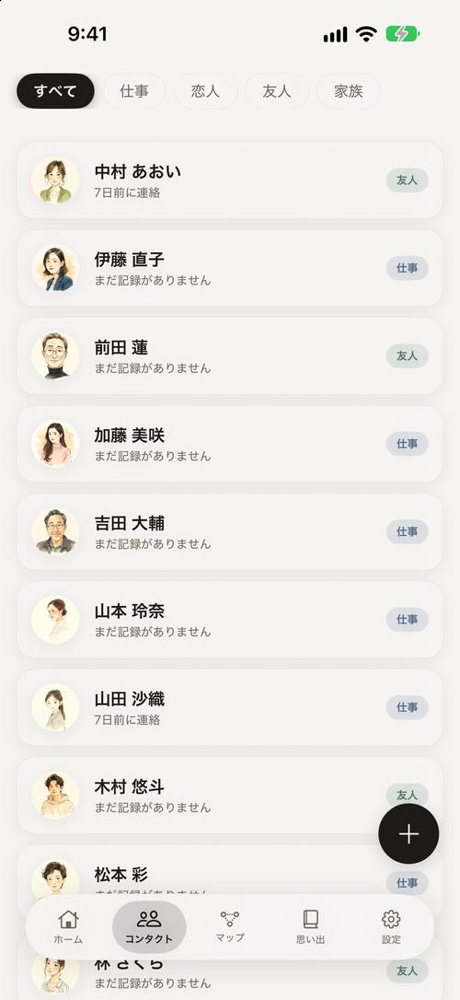

大切な人との連絡を、忘れないうちに。
忙しさの中で、つい遠ざかってしまう人がいます。Keep In Touch は、ご無沙汰になる前にリマインドを届けます。
- 使う場面
- 人とのつながり
- 使える端末
- iPhone
- 記録の置き場所
- この端末の中


そろそろの人が、浮かぶ。
開くと「そろそろ連絡したい人」が並びます。ご無沙汰になりかけた人を、頃合いで思い出せるように。
気になった人には、その場で「記録」をワンタップ。会えた日を、すぐ残せます。
大切な人が、ここに集まる。
家族・友人・恋人・仕事。連絡を絶やしたくない人を登録し、カテゴリで色分け。最後に連絡した日も添えて、顔ぶれを見渡せます。
誰を大切にしたいか——その輪を、自分の手で整えられます。
つながりが、地図になる。
あなたを中心に、関わりの深さを「距離」で配置。よく関わる人ほど中心に、ご無沙汰の人は外側へ。関係の全体像が、ひと目で見えてきます。
そろそろの人は、ほのかに光ってサインを送ります。光ったら、連絡の頃合い。
会話のかけらを、ためていく。
人ごとに、最後に話した日やちょっとしたメモを残せます。たまった「思い出」が、次に話すきっかけに。
重ねるほど、その人と過ごした時間が形になっていきます。
大切な人をまとめる
連絡を絶やしたくない人を登録。顔ぶれを一覧で見渡せます。
ご無沙汰の前にリマインド
「そろそろ連絡しては」と、頃合いを見てお知らせします。
軽い記録
最後に連絡した日や、ちょっとしたメモを残せます。次に話すきっかけに。
誕生日・記念日も忘れない
誕生日や記念日をリマインド。ホーム画面のウィジェットで、近日中の誕生日とそろそろ連絡したい人を確認できます。
連絡先は端末の中に
大切な人の情報は、原則あなたの端末の中だけに。私たちは見ません。
基本の機能は、無料で。
無料では 5 人まで登録できます。ベーシックプランで、人数の上限なく使えます。買い切りなら、一度きりのお支払いで。
価格は税込です。月額・年額は自動更新、買い切りは一度きりのお支払いです。解約・更新の詳細は 特定商取引法に基づく表記 をご覧ください。
Keep In Touch は何をするアプリですか？
大切な人との連絡を思い出すための iOS アプリです。連絡先を整理し、ご無沙汰になる前にリマインドします。
無料で使えますか？
基本の機能は無料です（登録は 5 人まで）。ベーシックプラン（月 ¥270／年 ¥2,400／買い切り ¥4,200）で、人数の上限なく使えます。
関係マップとは何ですか？
あなたを中心に、関わりの深さを「距離」で配置する関係マップです。よく関わる人ほど中心に、ご無沙汰の人は外側に表示され、連絡の頃合いがひと目で分かります。
連絡先データは安全ですか？
大切な人の連絡先は原則あなたの端末の中だけに保存されます。行動を追跡する仕組みも広告もありません。
どこで入手できますか？
App Store で配信中です。